★★★ けんさくくん 高機能Excel検索ツール ★★★
本ツールは、大量のExcelファイルから必要な情報を「一瞬」で探し出すための、高機能検索ツールです。
フォルダをドラッグ＆ドロップして対象ワードを入力するだけで、目的のセルを素早く見つけ出し、
ワンクリックで該当箇所を開くことができます。
さらに、検索したセルの周辺もあわせてExcel出力したり、行単位での検索など、さまざまなユースケースでの
利用を想定した機能を備えています。
・zipファイルを解凍し、任意のディレクトリに配置するだけでインストール完了となります。
付属の「スタートメニューへの登録.vbs」を実行してスタートメニューに登録することもできます。
・本ソフトウェアは、「%userprofile%\AppData\Local\けんさくくん」にのみ設定等の情報を格納しま
す。
・本ソフトウェアは、Windowsレジストリを利用しません。
・本ソフトウェアは、外部API通信やデータ送信など、一切のネットワークアクセスを行いません。
・検索対象のフォルダやファイルへのアクセスは、ユーザー様自身が持つアクセス権限の範囲内でのみ行われます。
・SharePoint等、クラウド上のExcelを直接URL指定で検索する機能は持っていません。
OneDriveの同期機能などを利用し、エクスプローラーからローカルファイルや
ネットワークドライブとして、扱える状態にする必要があります。
・本ソフトウェアは、その品質や機能について保証するものではありません。
また、本ソフトウェアの使用によって生じた損害について、開発者は一切の責任を負いません。
・本ソフトウェアはシェアウェアとして公開します。継続的な利用には、ライセンス登録が必要です。
1. はじめに・インストール
「けんさくくん」は、大量のExcelファイルから必要な情報を爆速で探し出すためのプロフェッショナル向け検索ツールです。
インストーラー不要で、配布されたZipファイルを解凍し、任意のディレクトリに配置するだけで動作します。
【動画】基本的な使い方
 【図】ディレクトリ構造。zipを解
凍して「けんさくくん.exe」を実行します。
【図】ディレクトリ構造。zipを解
凍して「けんさくくん.exe」を実行します。 - スタートメニューへの登録.vbs：けんさくくんへのショートカットをスタートメ ニューに追加します。
- システム設定を開く.vbs：ツールを起動せずにシステム設定を変更できます。
- tools/設定初期化.vbs：ライセンス登録を維持したまま、検索履歴や動作設
定などの情報を
すべて初期状態にリセットします。 - tools/アンインストール.vbs：本体フォルダや設定ファイルを安全に一括削
除します。
※エクスプローラー等で本体フォルダを開いていると削除できません。
スタートメニューから実行されることを想定したツールです。
本アプリは個人開発ソフトウェアのため、高額なコードサイニング証明書（EV/OV電子署名）による署名を行っておりません。
そのため初回起動時にWindows SmartScreenの青い警告画面が表示される場合がありますが、以下の手順で安全に起動できます。
- 警告画面内の「詳細情報」リンクをクリックします。
- 右下に表示された「実行」ボタンをクリックします。
※本ツールは外部通信を一切行わない完全オフライン設計（データ送信ゼロ）です。安心してお使いください。
2. 基本操作
対象指定と検索実行
画面左側の「検索対象」にフォルダやファイルリストを指定し、検索キーワードを入力して「検索実行」を押します。
検索対象キーワードは、改行で「OR」検索となり、すべてのメッセージIDを検索する、
といった数100個の検索条件の指定もできます。
入力欄は、検索対象キーワード下部のグレーの線を下方向へドラッグすることで入力欄を拡げることもできます。
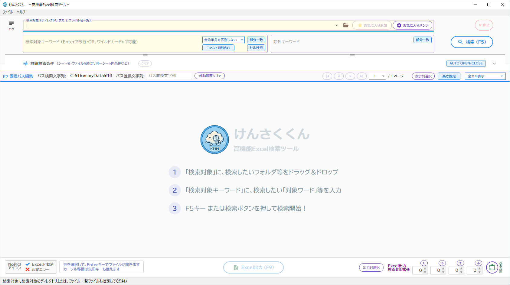
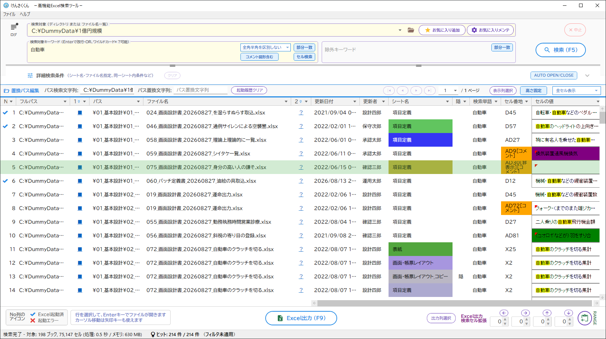
【図】検索実行後。ヒットしたファイルとセル内容が一覧で表示されます。お気に入り検索対象の登録と切り替え
よく検索するディレクトリは「お気に入り」として登録しておくことができます。
検索対象の右側にある▼ボタンからワンタッチで切り替えが可能です。
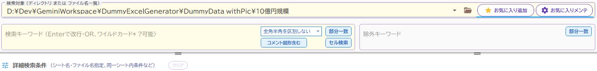
検索対象の右のお気に入り追加ボタンで、簡単にお気に入りに追加ができます。順番の変更や削除をしたい場合、お気に入りメンテボタンをクリックします。
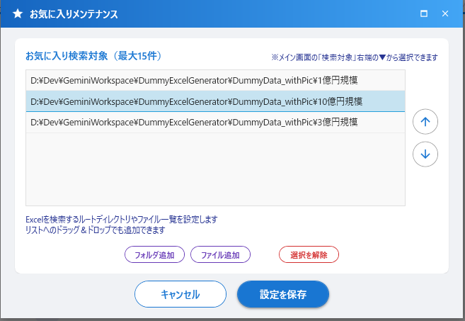
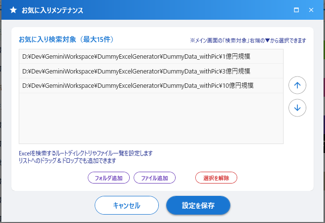
検索結果一覧の見方と操作
トグルボタンで、セルの高さを固定して見やすくしたり、自動調整したりできます。また、ページネーションでサクサクめくれます。
| トグルボタン状態 | 表示例と意味 |
|---|---|
| 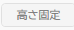 |
行の高さ固定ON（デフォルト）：行の高さが一定になり、一覧性が高くなり
ます。 行の高さ固定OFF ：長いテキストも折り返して全内容 が表示されます。 |
一覧からファイルを開く
一覧をダブルクリックするか、Enterキーを押すことで、該当ファイルが自動的に開き対象セルにフォーカ スします。
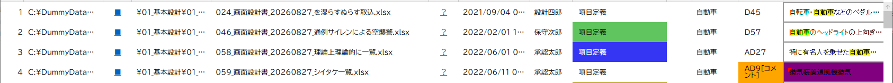
① ファイルを開こうとする前の状態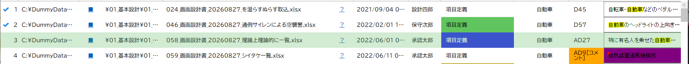
② 正常に開けた場合、一覧に「レ」が付きます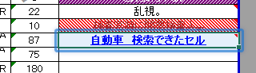
③ Excelが開いて、対象セルが自動フォーカスされます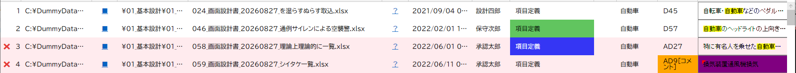
④ エラー時（ファイルがない等）は「×」に3. 高度な検索オプション（詳細条件）
検索精度を高めるため、各種トグルやプルダウンで条件を制御できます。
| トグル・プルダウン | 表示例と意味 |
|---|---|
| 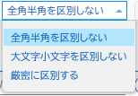 |
文字種の区別 大文字・小文字、全角・半角を厳密に区別して検索するかどうかを指定します。 |
| 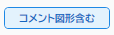 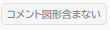 |
コメント・図形を含む 通常のテキストに加え、付箋（コメント）や図形オブジェクト内の文字も検索対象に含めるかを切り替えます。 |
| |
・部分一致： 入力したキーワードがセルまたはセルを結合した行※に含
まれていればヒットします。（※前後にワイルドカード `*`
をつけても意味がありませんが、単語の途中に `*` を挟む場合は有効です） ・完全一致： セルまたはセルを結合した行※の内容とキーワードが完全に一致す る場合にヒットします。ワイルドカード `*` を前後に応用することで、前方一致や後方一致を実現できます。 ※下で「行検索」を指定した場合は、「結合した行」で部 分一致または、完全一致で検索します。 |
| 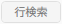 |
検索対象の単位 ・セル検索： 1つのセルの中で検索が完結します。 ・行検索： 1行分の全セルのテキストを連結した文字列で検索を行います。 ※例えばA列に「機能名」、B列に「検索処理」とある 場合、「機能名検索処理」で ヒットさせることができます。 |
4. 絞り込み検索・各種フィルター
列フィルター（文字・日付・シートなど）
検索結果の一覧の見出し（列ヘッダ）にある▼ボタンをクリックすると、Excelと同じようなフィルター機能を使って結果をさらに 絞り込むことができます。
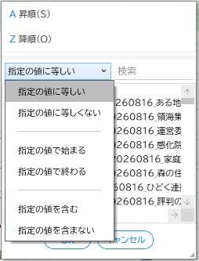
テキストフィルタ（特定の文字を 含む/含まないなど）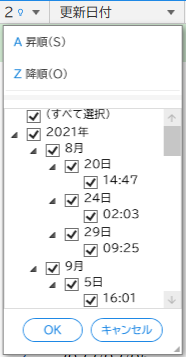
更新日時での絞り込み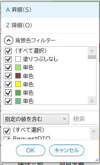
シート色による絞り込み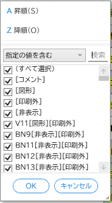
検索したセルの 状態による高度なフィルタ（セルの番地）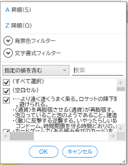
セルの値 文字のフィルター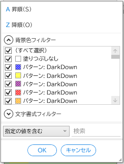
セルの値 背景 色のフィルター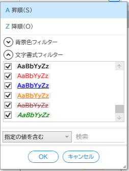
セルの値 高度 な文字のスタイルのフィルター詳細検索条件ダイアログ
画面中央の「詳細検索条件」から、さらに細かい複合条件を指定できます。
こちらも改行で入力することで、「OR」検索となります。また、「除外」で「含まない」条件も指定できます。
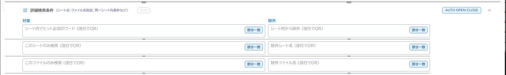
| 条件単位 | 説明・ユースケース |
|---|---|
| シート内でヒット必須のワード | ヒットしたセルと「同じシート内のどこか」に指定のキーワードが存在することを必須条件とします。 例：セル検索で「設計」を探しつつ、同じシートのどこかに「承認済」という文字があるシートだけを抽出する。 |
| このシートのみ検索 |
検索対象とするシート名に、指定キーワードが含まれることを必須条件とします。 例：「マスタ」という名前のシートを検索対象にする。 |
| このファイルのみ検索 | 検索対象とするファイル名に、指定キーワードが含まれることを必須条件とします。 例：「プログラム仕様書」が含まれるファイルのみを検索対象にする。 |
フィルタの解除
適用した各種フィルタ（絞り込み）を解除したい場合は、一覧上部の「フィルタ解除」ボタンを押すか、ステータスバーに表示されるオ レンジのフィルタ適用中をダブル・クリックするとメッセージをチェックして、すべてのフィルタ設定をリ セットできます。
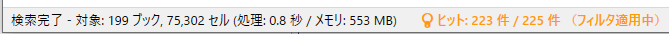
フィルタが指定されている状態の場合、オレンジにステータスバーが変わります。ダブル・クリックすると、確認メッセージでOKを押すと、列フィルタをクリアします。
表示モードの切り替え
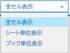
- 全セル表示（デフォルト）
すべてのヒット箇所が一覧に表示されます。 - シート単位表示
シート単位で一覧に表示されます。「シートごとにExcelを順次開いてチェック・修正作業を行っていくケース」に最適 です。 - ブック単位
ブック単位で一覧に表示されます。「ブックごとにExcelを順次開いてチェック・修正作業を行っていくケー ス」に最適です。
拡張セル出力（周辺セルの一括出力）機能
ヒットしたセルだけでなく、その周辺のセル（行全体や特定の列範囲）もまとめてExcelに出力したい場合に便利な機能です。結果 一覧の右クリックメニュー「拡張セル出力」から使用します。
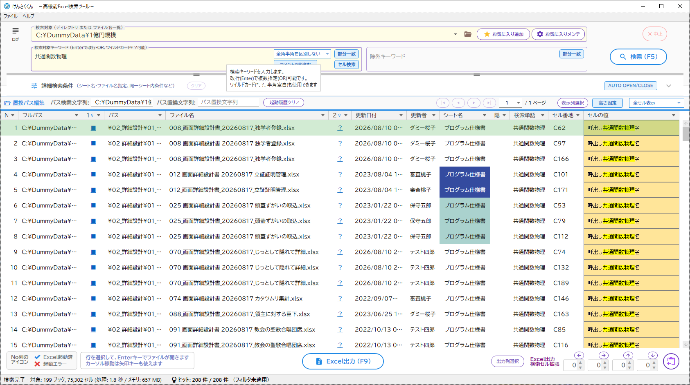
① 共通関数物理で検索しました。行を選択して、EnterかダブルクリックでExcelを起動します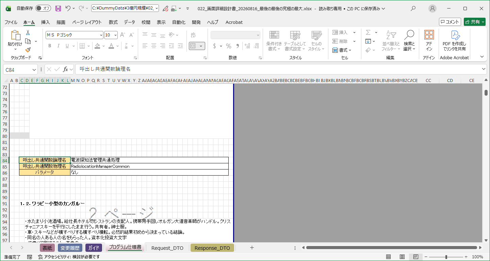
② Excelが起動しました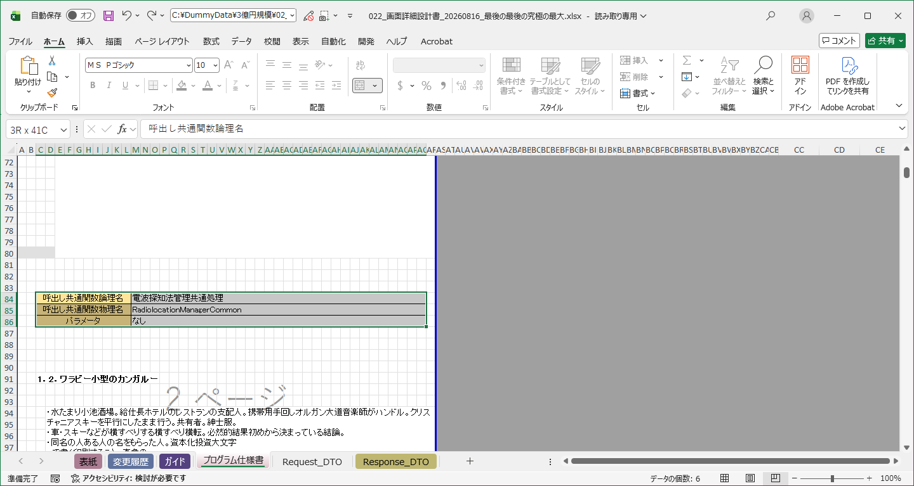
③ 一覧にしたい範囲をExcelで選択します。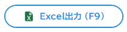
④ 選択した範囲から相対座標が自動計算されます。そのまま「Excel出力」を押します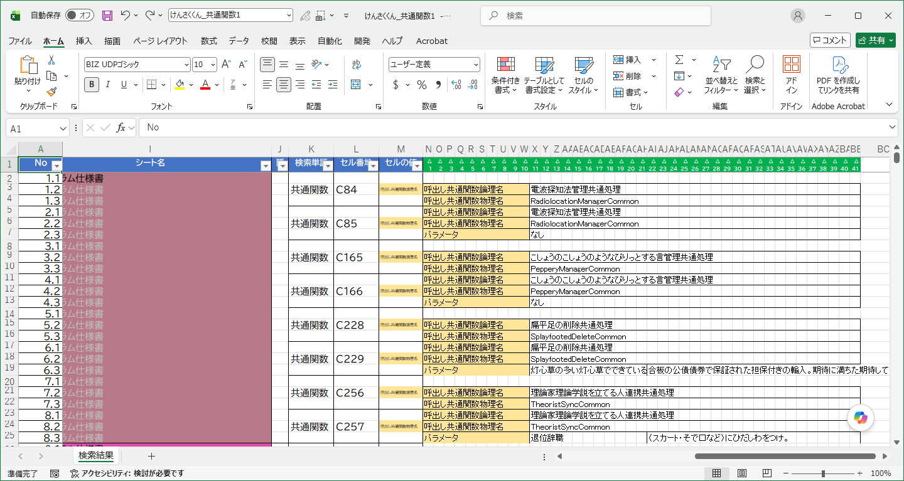
⑤ 指定した範囲のセルが、すべてまとめてExcelへ出力されます！5. 表示列のカスタマイズ
一覧の右上にある設定アイコン（）から、列の表示・非表示を 切り替えられます。
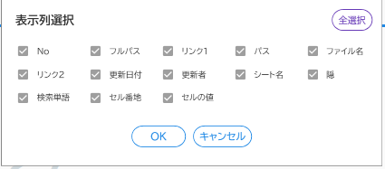
表示列選択ダイアログ。不要な列のチェックを外します。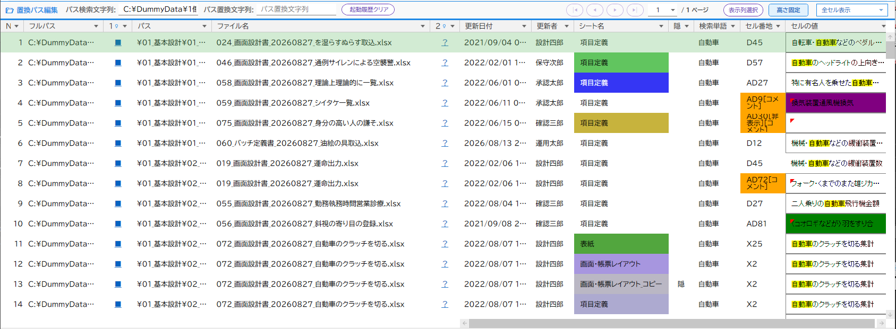
すべての列が表示されています（ALLチェック版）
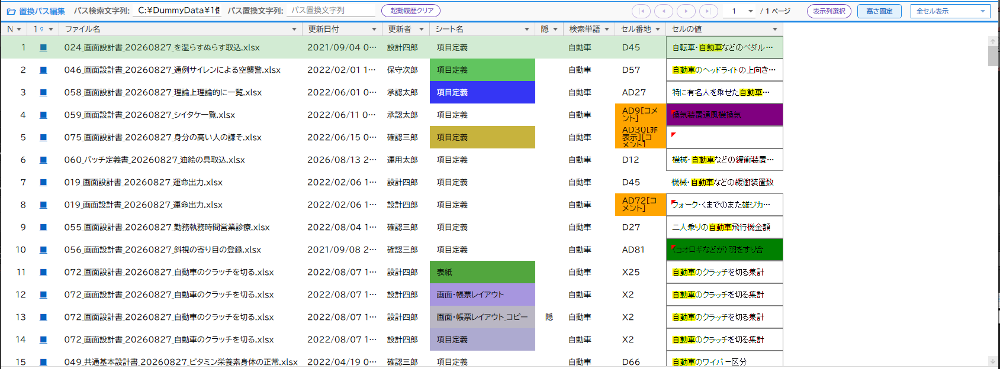
不要な列を非表示にすることでスッキリ見やすくなります
システム設定について
「ファイル」＞「システム設定」から、アプリケーションの挙動やパフォーマンスに関する詳細な設定を行うことができます。
各種設定項目は、大きく3つのグループに分かれています。
① 検索・システム負荷に関する主要設定
| 設定項目 | 詳細説明 |
|---|---|
| 検索警告ファイル数 | 一度に大量のExcelを検索に巻き込む際、警告ポップアップを出す閾値（ファイル数）です。 予期せぬ超巨大検索によるフリーズや一時的なレスポンス低下をガードします。 |
| メモリ閾値 | ツールが内部に保持・使用する最大メモリ消費量の制限値（MB単位）です。 PC全体のメモリを圧迫しすぎないよう安全弁として機能します。 |
| 最大チェックファイル数 | 解析対象にするファイル数の上限です。これを超えるファイルは探索対象から除外されます。 |
| 最大表示件数 | 一覧に表示する検索結果の上限件数です。上限を超えた場合は安全のため一覧への表示が打ち切られます。 |
| 最大並列処理数 | 同時に処理を行うスレッド数を指定します。「0」を指定すると、PCの最大コア数を自動で取得してフルパワーで処理します。他の作業への影響を抑えたい場 合は数値を下げてください。 |
| 1ページの表示件数 | 1ページあたりに表示する検索結果の件数です。この件数ごとにページングが行われます。 |
② 表示・出力の記憶設定と探索除外設定
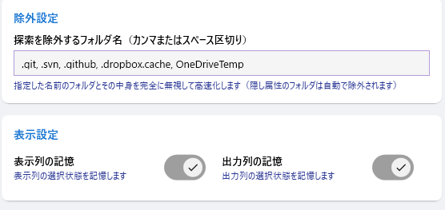
| 設定項目 | 詳細説明 |
|---|---|
| 探索を除外するフォルダ名 （カンマまたはスペース区切り） |
ここで指定した名前のフォルダ（「.git」や「.svn」など）は中身を一切探索せずスキップします。 |
| 表示列の選択状態を記憶する | チェックを入れると、検索結果一覧で選択した「表示列選択」の状態を次回起動時にも復元します。 |
| 出力列の選択状態を記憶する | チェックを入れると、Excel出力時の「出力列選択」の設定を次回起動時にも復元します。 |
6. ショートカット操作一覧
検索結果一覧画面では、キーボードやマウスを使って素早く以下の操作を行うことができます。
-
ダブルクリック： 選択している行のExcelを起動
-
ENTERキーをタイプ： 選択している行のExcelを起動（一覧またはログのテキスト）
-
SHIFT＋
ENTERキーをタイプ： 選択している行のフォルダを開く（一覧またはログのテキスト） -
F5キー： 検索を実行
-
F9キー： 検索されたExcelを出力（フィルタ後の全ページ）
-
No.列値をクリック： 対象の行をまるごと選択
-
A列以外をクリック： 対象セルの個別選択
-
CTRL + C： 選択部分をコピー。Excel等へ CTRL + V で貼り付ければ、セルの背景色や取消線を維持したまま転記可能です！
7. 便利な活用Tips
業務での実用性をさらに高めるための、ちょっとした工夫や使い方を紹介します。
💡 パス一覧ファイル（.txt）を使ったピンポイント検索
検索対象にはフォルダだけでなく、ファイルパスが1行ずつ書かれたテキストファイル（.txt）を指定することも可能です。
例えば、コマンドプロンプトを使って以下のコマンドを実行すると、フォルダ内の全ファイルパス一覧を作成できます。
dir /s /a-d /b > files.txt
作成された files.txt
をメモ帳などで開き、検索したいファイルだけを残して保存します。このテキストファイルを「検索対象」にドラッグ＆ドロップすれば、不要なファイルを弾い
た無駄のないピンポイント検索が可能です。
このファイルに複数のフォルダを記載すれば、検索対象を複数指定したのと同じ効果が得られます。
💡 過去データ（oldフォルダ等）を避けて高速化
実業務のフォルダには、old や bak、アーカイブ
といった過去の不要なファイルが大量に眠っていることがよくあります。
これらを検索対象に含めると無駄に時間がかかり、結果もノイズだらけになってしまいます。
「システム設定」の「探索を除外するフォルダ名」に old
などを登録しておけば、これらのフォルダを丸ごと無視して爆速で検索できます！
便利な付属ツール（セットアップと管理）
けんさくくんのフォルダ内には、導入や運用をサポートする便利なスクリプトが 同梱されています。用途に合わせてダブルクリックで実行してください。
- スタートメニューへの登録.vbs
けんさくくんとマニュアルへのショートカットをスタートメニューに追加します。
レジストリは一切変更しないため、システムを汚さず安全に利用できます。
- システム設定を開く.vbs
ツールを起動せずに、システム設定を変更できます。
アンインストールと設定の初期化について
システムを削除・初期化するツールを tools フォルダに配置しました。
- 設定初期化.vbs
ライセンス登録を維持したまま、検索履歴や動作設定などの情報をすべて初期状態にリセットします。 - アンインストール.vbs
本体フォルダ、設定ファイル、スタートメニューの登録情報を安全に一括削除します。
※エクスプローラー等でフォルダを開いていると削除できない場合があります。
基本的にスタートメニューから呼び出されることを想定したツールです。
8. 制限事項と仕様詳細
本ツールを快適・安全にご利用いただく上での制限事項や仕様についてご案内します。
| 項目 | 制限事項・仕様 |
|---|---|
| 特殊な一覧表示 | 図形やコメントが検索でヒットしたり、コメントが付与されているセルを検索した場合、
セル番地の表示に、[図形]、[コメント]、[印刷外]、[非表示]が追記されていていることがあります。 セルの値には、図形は、図形のテキストが表示されます。 コメントについては、セルの左上に赤い◤が付与され、マウスをフォーカスすると文言が表示されま す。 非表示：列の非表示、行の非表示に該当した箇所を検索した場合に、表示されます。 印刷外：印刷範囲外を検索した場合に、表示されます。 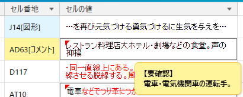 特殊な一覧のセル番地とセルの値の表示
|
| セルの書式再現範囲について | 【検索結果一覧（グリッド表示）】 視認性を高めるためにExcelの書式をある程度再現して表示します（背景色、文字色、太字、斜体、取消線など）。ただ し、条件付き書式や複雑なフォントサイズ混在は再現できません。あくまで「探しやすくするための簡易ビュー」です。 
一覧での書式再現イメージ（※一部対応していない書式もありま
す）
結果一覧から「Excel出力」を行った場合は、元のファイルに設定されていた色や文字に対する書式は出力先の Excelファイルへ可能な限り引き継がれます。 なお特に、セル結合、パターン（網掛けなど）、センタリング等の文字揃えについては、対応しておりません。 |
| 数式（計算式）の扱い |
本ツールは、高速化のためにExcelファイルをバックグラウンドで解析します。そのため、数式そのもの（「=A1+B1」など）の文字列を検索すること
はできません。 その代わり、Excelが内部に保持している「計算結果の表示値（生データ）」を検 索対象としています。（※日付やパーセンテージ等は、表示形式適用前のシリアル値など生データでのヒットとなる場合があ ります） |
| メモリとパフォーマンス |
数万行に及ぶ巨大なデータベース表（数十MB）として利用されているExcelファイルを大量に検索すると、PCのメモリを大きく消費します。 本ツールはシステム限界を超えないよう設計されており、設定された「メモリ閾値」を超えると、安全のために一時的に処理 速度を落とすか、処理を中断する場合があります。 |
| クラウドパス（SharePoint等） | SharePointなどの http(s)://
から始まるクラウド上のExcelファイルを直接指定して検索する機能は持っていません。ただし、工夫として、パス検索文字列～パス置換文字列を利用すれば、SharePointのurlが構築できるため、 SharePointのExcelを起動できる指定も考慮しました。 |
9. メッセージ・ログ一覧
操作中やログ画面（左側）に表示される主なメッセージとその対処方法です。
1. ログ一覧
ログには以下の4種類の状態があり、アイコンの色や形状でひと目でわかるようになっています。
| 状態 | アイコン | 説明 |
|---|---|---|
| 正常時 | 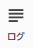 |
特に問題なく処理が完了している状態です。 |
| 正常時（未確認あり） | 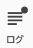 |
正常ですが、まだ確認していないINFOログがある状態です。 |
| 警告あり | 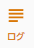 |
パスワード保護やスキップなど、処理は継続されましたが確認が必要な警告（WARN）が発生しています。 |
| エラーあり | ファイルの破損などで読み取れなかった重大なエラー（ERROR）が発生しています。 |
主なログメッセージ
| 種類 | メッセージ例 | 意味と対処 |
|---|---|---|
| [INFO] | 対象ファイル抽出を開始します（対象フォルダ）… | 指定されたフォルダ内のExcelファイルをリストアップした際の通常ログです。 |
| [WARN] | 対象ファイルが多すぎるため、処理を中止しました。 | 対象ファイル数が警告閾値を超え、ユーザーが確認ダイアログで「いいえ（中止）」を選んだ場合です。 |
| [WARN] | パスワード保護（暗号化）されているため解析をスキップしました | Excelファイルにパスワードが設定されているため、中身を読み取れませんでした。スキップして次のファイルを処 理します。 |
| [WARN] | メモリ使用量が閾値（〇〇 MB）に達しました。 | PCのメモリ使用量が設定された閾値を超過しました。古いキャッシュを破棄しながら安全に処理を継続しています。 |
| [WARN] | 対象が見つかりません | 検索対象として指定されたパス一覧のテキストファイル内に、存在しないパスが含まれています。 |
| [ERROR] | ファイルが壊れているか、ロック中のため読み取れませんでした。 | ファイルが破損しているか、非対応の形式です。または他プロセスに完全ロックされていて開けなかったため検索できま せん。 |
2. ステータスバー表示
画面最下部のステータスバーに常時表示される、現在の状態や最終結果のサマリーです。
| ステータス表示例 | 発生契機・意味 |
|---|---|
| 検索対象にディレクトリまたは、ファイル一覧ファイルを指定してください | 起動時、またはパス関連のエラーから復帰し、ユーザーに入力を促す初期状態です。 |
| 対象ファイルを抽出中... | 検索・解析実行時、ディレクトリ内のExcelファイル一覧を取得している最中です。 |
| 解析中... 〇〇 / 〇〇 ブック (メモリ: 〇〇 MB) | 検索・解析処理の実行中、進捗状況をリアルタイムで表示しています。 |
| 解析完了 - 対象: 〇〇 ブック, 〇〇 セル (処理時間: 〇〇) | バックグラウンド解析処理が完了した時のサマリーです。 |
| 検索完了 - 対象: 〇〇 ブック, 〇〇 セル (処理: 〇〇 / メモリ: 〇〇 MB) | 検索処理が完了した際のサマリーです。 |
| 〇〇 ｜ ※表示上限到達 | 検索ヒット数が設定された「最大表示件数」を超え、結果の一部表示が打ち切られた状態です。 |
| 💡 ヒット: 〇〇 件 / 〇〇 件 | 検索結果に対して、UI上で列フィルタ（文字や色など）が適用され、表示件数が絞り込まれている状態です。 |
3. 画面メッセージ（ポップアップ等）
ユーザーへポップアップで直接通知されるメッセージの一覧です。
警告・エラー通知
| メッセージ例 | 意味と対処 |
|---|---|
| [エラー] ファイルがありませんでした | 検索結果の一覧からファイルを開こうとしたが、実ファイルが削除・移動されていた場合です。 |
| [Excel起動エラー] 読み取れないExcelか、Excelがビジーのため、開けませんでした | Excelを開く際、致命的なエラーが発生し復帰できなかった場合です。 |
| [試用期間終了] 試用期間が終了しています。 製品版ライセンスのご登録をご検討ください |
初回起動から30日が経過しました。 機能の制限はありませんが、起動時のアラート画面や、Excel編集時の背景にロゴが追加されます。 そのまま全機能を利用し続けることも可能ですが、製品版への移行をご検討ください。 |
| [入力エラー] 〇〇には〇〇以上の数値を入力してください | 設定画面で、該当項目に不正な数値が入力された場合です。正しい範囲の数値を入力してください。 |
| [確認] 検索したセルがExcel上の選択範囲に含まれていません。 正しい範囲を選択してから、再度お試しください |
拡張セル出力機能等で、Excelの選択範囲指定が間違っている場合です。正しい範囲を選択してください。 |
ユーザー選択・確認
| メッセージ例 | 発生契機・意味 |
|---|---|
| [クリア] 選択した行の履歴をクリアしますか？ | 検索結果の一覧で右クリックメニューから「起動履歴をクリア」を選択した時です。 |
| [ビジー状態の検知] Excelが入力中またはダイアログを開いているなどで、応答を返せません(ビジー状態)。 ビジー状態のExcelの操作中の内容をキャンセルして指定したExcelを開きますか？ |
Excelを開こうとした際、対象のExcelが編集中(ビジー)のため操作がブロックされた時です。 |
| [確認] 対象ファイルが 〇〇 件あります。 処理を続行しますか？ |
対象ファイル抽出完了後、ファイル数が設定画面の「警告ファイル数」を超過した時の確認ダイアログです。 |
| [フィルタ解除] フィルタの適用をすべてリセット（解除）しますか？ | 検索結果の全フィルタ解除ボタン（またはステータスバーの解除リンク）をクリックした時です。 |
| [スタートメニューの更新確認]
スタートメニューのリンク先と異なる場所から「けんさくくん.exe」が起動されました。 スタートメニューに登録されているリンク先を現在の場所に更新しますか？ |
起動時に、スタートメニューに登録されているショートカットのリンク先と現在の実行ファイルのパスが異なる場合の確 認です。 |
10. ライセンス登録と試用期間について
本ツールはどなたでも、初回起動から30日間はすべての機能を制限なく無料でお試しいただけます。
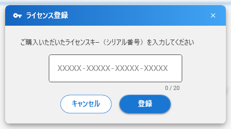
試用期間（30日）終了後の動作について
30日が経過した後も、検索機能そのものがロックされて使えなくなるようなことはありません。引き続き業務でツールをご利用いただくことは可能ですが、以 下の制限が加わります。
- 起動時に毎回「試用期間終了」の案内ダイアログが表示され、非表示にできなくなります。
- 検索結果からExcelファイルを開いた際や、Excel出力を行った際、対象ファイルの背景に「けんさく くんのロゴマーク」が透かし（ウォーターマーク）として挿入されるようになります。
これらの制限を解除し、業務で快適に本格利用されたい場合は、画面上部のメニュー「ファイル」＞「システム設定」内の「ライセンス 登録」ボタンより、製品版のライセンスキーをご登録ください。
11. お問い合わせ・著作権
本ソフトウェアに関するご意見、ご要望、不具合のご報告などは、下記メールアドレスまでお気軽にお寄せください。
個人開発のため、すべてのご要望への個別対応や即時返答は難しい場合がございますが、今後の改善に向けてありがたく拝見いたします。
・メールアドレス：tossy.apps@gmail.com（作者：tossy.apps）
・公式Webサイト：https://tossy-apps.github.io/kensaku-kun/
© 2026 tossy.apps All Rights Reserved.